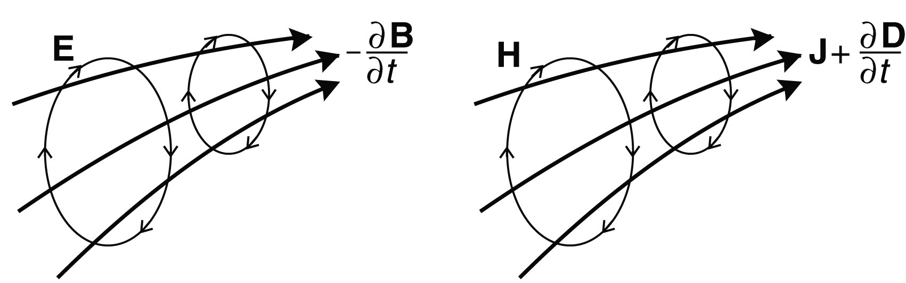

1 Elektromagnetische Größen
- magn. Feldstärke \(H\) [A/m]
- magn. Flussdichte \(B\) [Vs/m²] \(B=\mu H\) (oft “Magnetfeld”)
- magn. Permeabilität \(\mu\) [Vs/Am] \(\mu=\mu_0\mu_r\) , \(\mu_0\)=4\(\pi\) 1e-7Vs/Am
- mag. Suszeptibilität \(\chi_m=\mu_r\)-1
- magn. Fluss \(\Phi\) [Vs]
- spez. el. Widerstand \(\rho\) [\(\Omega\)m]
- elektr. Feldstärke \(E\) [V/m]
- dielektr. Verschiebung \(D\) [As/m²] \(D=\epsilon E\) (Hilfsfeld)
- elektr. Permittivität \(\epsilon\) [As/Vm] \(\epsilon=\epsilon_0\epsilon_r\) , \(\epsilon_0\)=8.854e-12As/Vm
- el. Suszeptibilität \(\chi_e=\epsilon_r\)-1
- elektr. Stromdichte \(j\) [A/m²]
- el. Leitfähigkeit \(\sigma\) [S/m]
1.1 Die Maxwell-Gleichungen
Faradaysches Induktionsgesetz
\[ \curl\vb E = -\pdv{\vb B}{t} \]
Ampèresches Durchflutungsgesetz
\[ \curl \vb H = \pdv{\vb D}{t} + \vb j \]

Die Quellen der Felder
Ladungsträger erzeugen eine elektrische Verschiebung \[\div \vb D = \varrho\]
Das Magnetfeld ist frei von Quellen und Senken \[\div \vb B = 0\]
Materialgleichungen: \(\vb B=\mu\vb H\), \(\vb D=\epsilon\vb E\), \(\vb j=\sigma\vb E\)
1.1.1 Amperesches Gesetz in der Geophysik
\[ \curl \vb H = \pdv{\vb D}{t} + \vb j \]
- Wellenausbreitung \(\curl\vb H=\pdv*{\vb D}{t}\): Georadar
- Induktion \(\curl\vb H=\vb j\), \(\curl\vb E=-\pdv*{\vb B}{t}\)
Magnetotellurik, EMI in Zeit- und Frequenzbereich - Magnetostatik \(\curl\vb H=\vb j\), \(\curl\vb E=0\)
1.1.2 Näherungen und Methoden
\[ \curl \vb H = \pdv{\vb D}{t} + \vb j \qquad \curl\vb E = -\pdv{\vb B}{t} \]
| Vorgänge/Felder | \(\curl\vb H\) | \(\curl\vb E\) | Methoden |
|---|---|---|---|
| Stationär | \(\vb j\) | 0 | Geoelektrik |
| Quasistationär | \(\vb j\) | \(-\pdv*{\vb B}{t}\) | Induktion |
| Wellenvorgänge | \(\pdv*{\vb D}{t}+\vb j\) | \(-\pdv*{\vb B}{t}\) | Georadar |
1.2 Die Elektrische Leitfähigkeit

- Länge \(L\), Querschnitt \(A\)
- Spannung \(U\) [V], Stromstärke \(I\) [A]
- Ohmscher Widerstand \(R\)=\(U\)/\(I\) [\(\Omega\)]
- Stromdichte \(j\)=\(I\)/\(A\) [A/m²]
- Elektr. Feld \(E\)=\(U\)/\(L\) [V/m]
- Ohmsches Gesetz
\(j=\sigma E\) (Leitfähigkeit \(\sigma\) [A/Vm])
\(\Rightarrow \rho=1/\sigma=E/j\) [\(\Omega\)m] spezifischer Widerstand
\(\Rightarrow \rho = \frac{U/L}{I/A}=\frac{U}{I}\frac{A}{L}=R\cdot k\) Konfigurations-Faktor \(k\) [m]
1.3 Spezifischer Widerstand (Knödel, 2005)
25 Dekaden:
- Diamant: 1e18 \(\Omega\)m
- Kupfer: 1e-7 \(\Omega\)m
abhängig von:
- Wassergehalt
- Fluidleitfähigkeit
- Tonanteil

1.4 Archies Gesetz
Der Formationsfaktor ist (bei tonfreien, gesättigten Sedimenten) exponentiell von der Porosität \(\phi\) abhängig. Der Exponent \(m\) heißt Zementationsexponent.
\[ F = \frac{\sigma_f}{\sigma}=\frac{\rho}{\rho_f} = \frac{a}{\phi^m} \]
- negativer Anstieg im log-log-Plot

1.5 Archies Gesetz II
Elektrische Leitfähigkeit des gesättigten (tonfreien) Porenraums:
\[ \sigma = \sigma_f / F = \sigma \phi^m S^n \quad \rho=\rho_f \phi^{-m} S^{-n}\]
- \(\phi\)-Porosität
- \(m\)-Zementationsexponent
- \(S\)-Sättigung
- \(n\)-Sättigungsexponent
Werte für \(m\):
- unverfestigte Sedimente: 1.3
- verfestigte Sedimente: 1.5-1.6
- Sandsteine: 2.0
1.6 Grenzflächenleitfähigkeit
strebt die Leitfähigkeit gegen einen Grenzwert, die Grenzflächenleitfähigkeit
\[ \sigma = \sigma_f/F + \sigma_s \]
- kleine Wasserleitfähigkeit
- geringe Porosität
- Tonminerale (Ton, Schluff)
- metallische Partikel (Fe2/3)

1.6.1 Temperatur-Abhängigkeit
komplexe Abhängigkeit, aber Linearisierung um Temperatur \(T_0\) (meist 25°C)
\[ \sigma = \sigma_0 (1 + \alpha (T-T_0)) \]
\(\alpha\) - meist 0.02 (2% pro K)